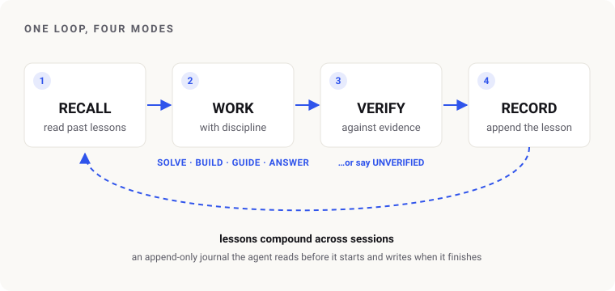

The Fable Method
A portable working protocol that gives an AI agent a memory and a verification habit, so it improves across sessions instead of starting over.
Context
AI agents are capable but forgetful and overconfident. They repeat mistakes they already solved, and they announce success without checking. I wanted one reusable protocol that fixes both — a way of working I could drop into any tool and trust on real tasks, not a demo.
What I did
- Designed a single loop — recall past lessons, do the work with discipline, verify against evidence, record what was learned — running underneath four modes: fixing what’s broken, building what’s new, answering how-to questions, and answering factual ones.
- Built a persistent, append-only memory so lessons compound: a global journal plus a per-project file the agent reads before it starts and writes after it finishes.
- Made verification non-negotiable. No success claim ships without quoted evidence from the environment, and anything that can’t be checked is labelled UNVERIFIED with the exact test to run.
- Added a failure drill. Anything whose job is to catch a problem — an alert, a backup, a retry — isn’t finished until the failure has been made to happen and the alarm has been watched to fire. In testing, this was the one change that measurably improved correctness.
- Extended the premise check to “authoritative” inputs. An invoice or a spec figure can itself be wrong, so when the data can’t reproduce the official number, saying so is the answer — and the agent never invents an output to satisfy a form, a gate, or a deadline.
- Rebuilt it as a thin core with the detail loaded on demand, so a trivial fix pays nothing for machinery it never uses. The ceremony now calibrates to the model as well as the stakes: a strong model starts a tier lighter and adds process only after it stumbles; a smaller one takes the full checklist up front.
- Added a token-economy layer so the discipline pays for itself — plain code before any model, the reading measured before work is handed to sub-agents, the cheapest capable model on each leg, and judgment and final sign-off never delegated.
- Made the memory earn its keep. A lesson is only written up if a fresh model couldn’t cheaply work it out again from the files alone; and constraints that live outside the code — a verbal veto, a contractual interface — are recorded with the authority behind them, not just their content, because a later session reading only the code can’t tell a mandate from a preference.
- Wrote in guardrails against the rest of what actually sinks agents: fixating on the first hypothesis, big-bang builds tested only at the end, and memory that bloats until the signal is buried.
- Tuned it empirically rather than by taste — graded runs, each change driven by a failure I watched happen, and each one kept only if it earned its place.

Outcome
- On a held-out benchmark, a small model went from 0 of 6 tasks to 5 of 6 with the protocol; a stronger model passed every case.
- Learned which rules actually pay. The failure drill was the only change that measurably improved correctness, and writing up every lesson cost more than it saved — which is why the record step now has a gate in front of it. Both findings came from runs, not intuition, and one of them killed a rule I liked.
- Found the honest ceiling. The last failures were a model-capability limit, not a protocol gap, so the design makes those failures visible (stated assumptions, hand-checked numbers) instead of hiding them behind a confident tone. I stopped there rather than game a passing score.
- Open-sourced with a reusable evaluation set, so any future change can be re-tested the same way.